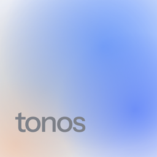

TonosTonos keeps everything on your iPhone.
This policy covers the Tonos iOS app, published by Aidan Niswender (“we”). The short version: we do not collect, receive, or store any of your data. There is no Tonos account and no Tonos server.
What stays on your device
Your answers, your scan measurements, your report, your routine, your session history, and your safety and pain flags are stored in the app’s private storage on your iPhone. They are protected by your device passcode and excluded from iCloud and iTunes backups. They are never uploaded, never sent to us, and never shared with anyone.
Camera and photos
The optional body scan uses Apple’s on-device pose detection (the Vision framework). The two photos are measured in memory and discarded immediately; only the resulting angles are kept. No photo is ever written to disk, added to your photo library, or transmitted. Camera access can be declined and the app works fully without it.
Purchases
Tonos Pro subscriptions and the lifetime purchase are handled by Apple through the App Store. Apple shares no personal information with us beyond what is needed to confirm a purchase. Apple’s handling of your payment data is described in Apple’s privacy policy.
Notifications
If you turn on the daily reminder, one local notification is scheduled on your device at the time you choose. It contains no personal information and is not sent through any server.
Data we do not collect
Tonos contains no analytics, no advertising, no tracking, and no third-party SDKs. The app makes no network requests of its own. Its App Store privacy label is “Data Not Collected.”
Children
Tonos is rated 4+ but its routines are designed for adult postural patterns. We collect no personal information from anyone, including children.
Deleting your data
Choose “Start over” inside the app, or delete the app from your iPhone. Either erases everything. Because we hold nothing, there is nothing for us to delete on our side.
Changes
If this policy changes, the new version will be posted at this address with a new effective date.